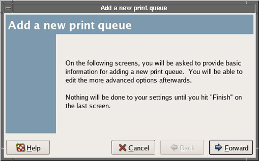
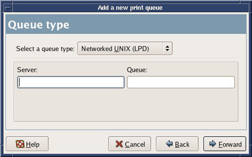
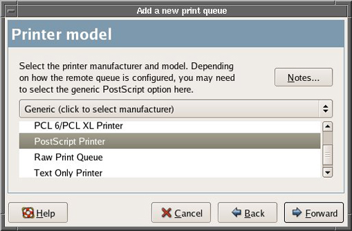
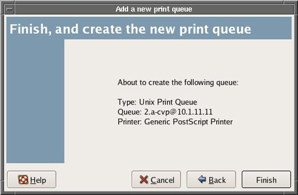
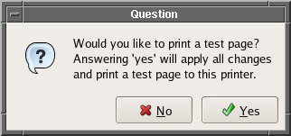

Operating Documentation
Direction 5670006, Rev# 1
Module Version 3.0, Version Date 8/19/08
Operating Documentation |
| Condition | Reference | Effectivity |
|---|---|---|
Applications Software is installed and configured. | - | - |
If applications are up and running, restart the computer by clicking [System Restart] and [OK].
From login screen, login as root . Do not bring up Guided Install.
Right Mouse click and bring up [Configure Printer](see Illustration 1).
Click on the [New] option (see Illustration 1).
Click on [Forward] The screen shown in Illustration 2 appears.
Illustration 2: Add a New Print Queue

Enter name of the Codonics Printer as GENNavprntr (case sensitive) (see Illustration 3). For BrainWave, you must use the name of GENNavprntr. For SAGE option, the name is not important. To proceed, click [Forward].
Select Queue type as Networked UNIX (LPD) as shown in Illustration 4. To proceed, click [Forward].
Illustration 4: Queue Type

Enter hostname or IP address for the Server, (example IP is 10.1.11.11).
Enter queue name as 2.a-cvp, then select [Forward].
For Printer Model, select Postscript printer, as shown in Illustration 5. To proceed, click[Forward].
Illustration 5: Printer Model

At the screen shown in Illustration 6, click [Finish].
Illustration 6: Finish and Create the New Print Queue

At the screen shown in Illustration 7, click [Yes] to apply changes and print a test page. The printer test page should print successfully at this time.
Illustration 7: Print Test Page

To verify SAGE printing, open the SAGE option. Select [File] then [Print]. A GUI will appear. In the Printer text field, remove the default printer and enter the name of the printer that was used in Step 6.